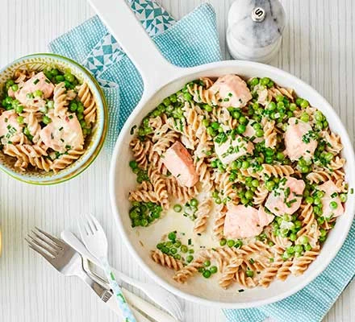

Salmon Pasta

Description
Salmon and pasta are a dream combination. Use smoked salmon or fresh in seafood spaghetti or baked cannelloni – and how about a salmon pasta salad for lunch?
Make this salmon pasta in under 20 minutes for a dinner the whole family can enjoy. Kids will love the fun-shaped pasta while packing in fibre and omega-3
Steps
- Bring a pan of water to the boil and cook the fusilli according to the pack instructions.
- Meanwhile, heat a knob of butter in a saucepan, then add the shallot and cook for 5 mins or until softened.
- Add the peas, salmon, crème fraîche and 50ml water. Crumble in the stock cube.
- Cook for 3-4 mins until cooked through, stir in the chives and some black pepper. Then stir through to coat the pasta. Serve in bowls.